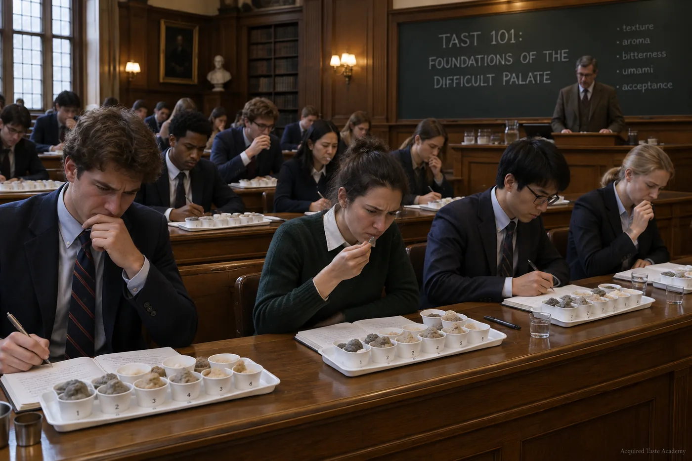

1.Mission
Most institutions teach students to make food taste better. The Academy takes the opposite commute: it teaches students to taste better, so the food can stay exactly as it is. Our graduates finish gas station sushi with visible confidence, request the airline tomato juice by name, and stand alone at potlucks beside the aspic, at peace.2
The method is ordinary pedagogy applied to extraordinary flavors: prerequisites, learning outcomes, weekly practica, and examinations. Nothing about our approach is experimental except the parts you swallow.
2.The curriculum, in brief
Coursework is sequenced in four levels. The survey level (TAST 090 through 102) builds tolerance for the merely disappointing. The intermediate sequence (TAST 200s) introduces fermentation, brine, and texture. The graduate seminars (TAST 400s) are conducted in a sealed room by faculty who have eaten things on camera. The capstone, TAST 500, is described in section 4 of the catalog and nowhere else, by policy.
By week four of any course, the student will no longer flinch. This outcome is published, assessed, and audited annually.3 The full catalog, with prerequisites and credit hours, is maintained on the curriculum page.
3.The Certified Iron Palate
Each completed course confers a stackable credential. Thirty credits, including the capstone, earn the Certified Iron Palate designation, the field's terminal qualification. Holders receive a diploma, a lapel pin that opens doors in certain Scandinavian markets, and the lifetime right to say "actually, it's an acquired taste" with institutional backing.
The designation has been revoked once, in 2021, for flinching. The review board's decision runs to forty pages and is considered definitive on the question of what constitutes a flinch.
4.Admissions
Admission is open each term. Applicants complete a short placement examination, available on the admissions page, which assigns an entry level from TAST 090 (remedial; toast, lightly buttered) to advanced standing. Tuition assistance is available. Refunds are not; see Abstract.
- Week one is Warm Milk. ↩
- Alumni outcomes are documented photographically on the alumni page. The confidence is visible. ↩
- The audit is conducted by a retired external examiner who tries, once a year, to make the sophomores flinch. In 2025 he brought lutefisk and left impressed. ↩